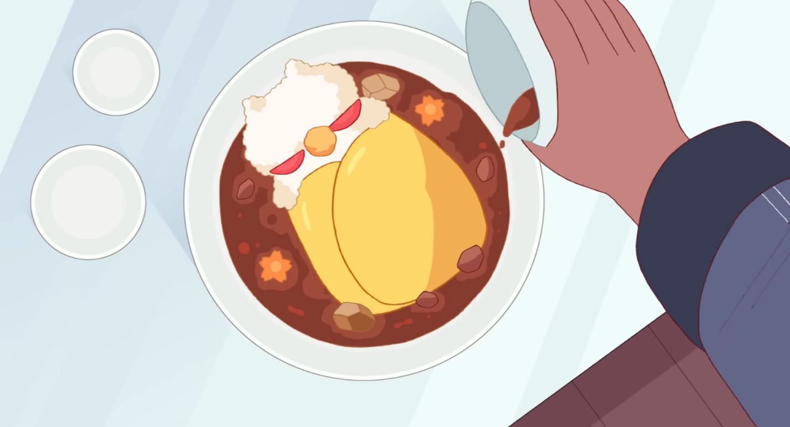
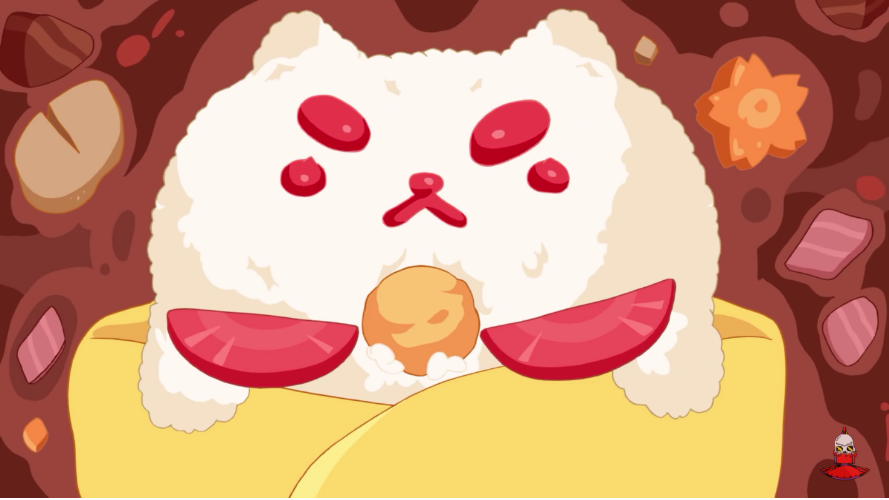
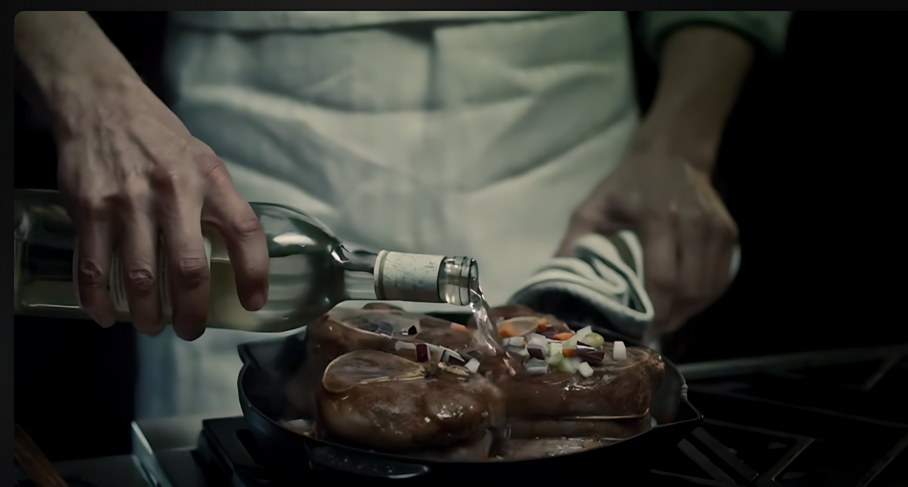
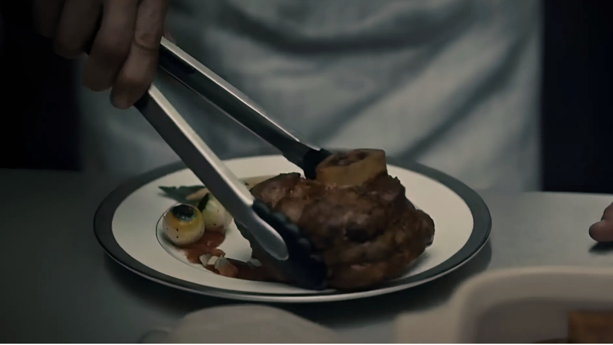
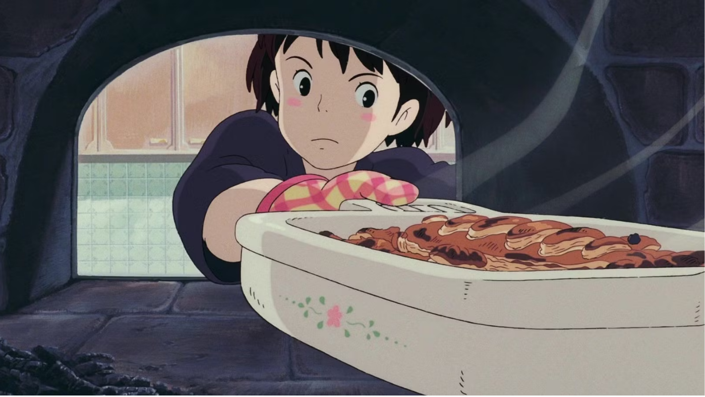
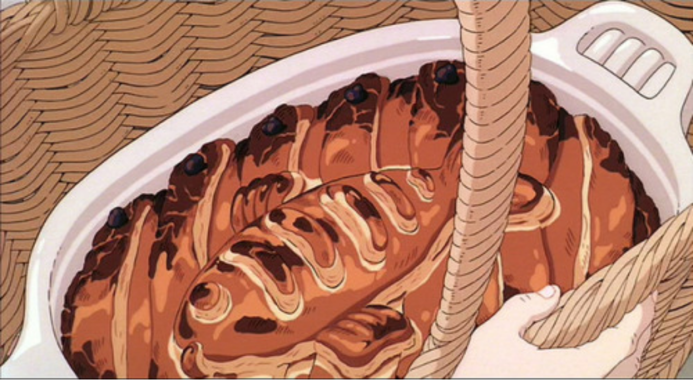

Our 3 F’s – Favorite Fictional Foods, and Why?
Feeling overwhelmed by all 9 recipes on the website? (We get it, it’s a lot to take in at once.) Take a moment to slow down and enjoy something a little different. Here, we’ve highlighted our favorite fictional recipes—not necessarily the most practical or even replicable, but the ones that brought us the most joy and inspiration. These are the dishes that made us pause, smile, and say, “I want to make that!” Whether it was the magic of the moment, the colors on screen, or just the pure creativity behind them, each one sparked something special. After careful consideration, we narrowed our list to a top 3—no easy task when the internet is full of imaginative culinary gems. These recipes are a big part of what inspired us to build this website in the first place. We hope they offer you the same sense of delight and wonder they gave us.
Bee & Puppycat – Curry
We’ll be the first to admit it: a big part of why we chose this dish is because it’s just so gosh darn adorable. Who wouldn’t fall in love with a puppycat-shaped curry nestled inside a fluffy omelet? Realistically, most people would whip up a curry, devour it immediately, and skip the artistic effort of sculpting it into a cuddly creature. But that’s part of what makes this scene so memorable—it’s not just food, it’s storytelling through cooking.

The dish comes from Bee and Puppycat, where Deckard lovingly prepares it to cheer up a friend. In doing so, he rediscovers his passion for the culinary arts, which had faded as he began to question his life’s direction. As he slices potatoes and carrots, stirs a fragrant curry sauce, and carefully plates the meal, the moment becomes more than just a visual treat. It’s heartwarming, personal, and yes, completely drool-worthy.

Hannibal – Osso Buco

We hate that we love this choice. Truly. It’s kind of the worst that Hannibal Lecter—yes, that Hannibal—is such an elegant, precise, and downright mesmerizing chef. Given his highly questionable culinary preferences, it feels wrong to be this impressed. Several dishes from the show made our mouths water in spite of ourselves, but this one? This one takes the cake (or, well, the thigh).

A beautifully prepared, twine-knotted “lamb” thigh, marinated with rich aromatics, then flambéed with wine to create a crisp crust. From there, it’s slow-roasted its own juices and served alongside charred vegetables. The technique is masterful, the presentation flawless. If this dish was served to us, without context, we’d eat it. And love it. Even if Hannibal yapped about his disturbingly human-themed metaphors, we’d just… keep chewing.
Kiki’s Delivery Service – Herring and Pumpkin Pot Pie
Herring and pumpkin—two ingredients we never imagined would belong in the same dish. Kiki, a young witch working a delivery job, gets a call one day to transport a pie from one home to another, far across town. What she doesn’t know at first is that this pie is a gift—a tender offering from a grandmother to her granddaughter, a student living away from home for the very first time.

When the grandmother accidentally burns the pie in the oven, Kiki steps in without hesitation, helping her remake it from scratch. After hours of effort and a stormy broomstick ride, Kiki delivers the pie. This scene, above all else, is a testament to what food can mean beyond taste and texture. It can be an act of kindness, a reminder of home, an I miss and love you; from one person to another. We are in tears while swallowing this bite.

We hope you enjoyed reading through these delightful fictional dishes just as much as we enjoyed writing about them. Each one holds a special place in our hearts (and stomachs)—not just for their visual or culinary appeal, but for the stories and emotions they carry. While these particular recipes aren’t currently available on our website, we’d love to hear from you. If you'd like to see any of them recreated, let us know through the suggestions link below!